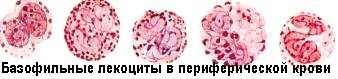

Иммуноглобулины Е и их рецепторы.
Среди свойств IgE, важных для понимания течения анафилактических реакций, наиболее существенны :
- способность сенсибилизировать собственные клетки к аллергенам - гомоцитотропность
- неспособность активировать систему комплемента по классическому пути (лишь очень большие количества иммунных комплексов с участием IgE активируют комплемент альтернативным путем).
- неспособность проходить через неповрежденную плаценту.

Для фиксации реагинов имеется 2 типа рецепторов - высокоаффинный Р1 и низкоаффинный Р2.

Р1 - основной рецептор дегрануляции и ранней фазы анафилаксии. Р2 играет значительную роль в самоподдержании процесса синтеза реагинов, так как способен к аутопротеолизу и освобождению фрагментов, регулирующих синтез IgE (cм. выше). Активируя эозинофилы и тромбоциты, Р2 играет существенную роль в реализации поздней фазы анафилаксии и разрешении гиперэргического воспаления.
|
|
|
|
|
|